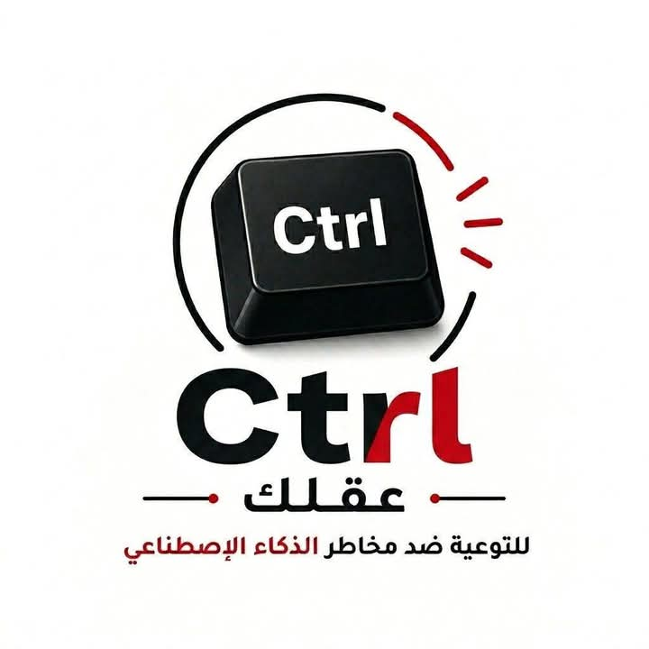

نفهم قبل ما نستخدم
نبسط مفاهيم الذكاء الاصطناعي ونوضح كيف تعمل أدواته، وحدود الاعتماد عليها.

Ctrl عقلكمن نواتج برنامج نتشارك
مبادرة شبابية للتوعية بالاستخدام الآمن والمسؤول لأدوات الذكاء الاصطناعي، وحماية الشباب والنشء من المخاطر الرقمية قبل ما تضغط Enter.
ضمن نواتج برنامج نتشارك التابع لوزارة الشباب والرياضة ومنظمة اليونيسيف.
ليه Ctrl عقلك؟
نبسط مفاهيم الذكاء الاصطناعي ونوضح كيف تعمل أدواته، وحدود الاعتماد عليها.
نساعد الشباب على تمييز البيانات الحساسة وتجنب مشاركتها داخل المنصات الرقمية.
نواجه التضليل، الصور المفبركة، والانتحال بخطوات عملية للتفكير النقدي.
محاور التوعية
ما هو، أين يظهر في حياتنا اليومية، ومتى يكون مساعدا ومتى يحتاج مراجعة بشرية.
الخصوصية، التحيز، الأخبار الزائفة، التنمر الرقمي، وانتحال الهوية باستخدام أدوات AI.
أسئلة بسيطة تساعدك تراجع أي إجابة أو صورة أو فيديو قبل المشاركة أو التصديق.
قواعد عملية للكتابة، البحث، التعلم، والإبداع بدون غش أو انتهاك خصوصية الآخرين.
قبل ما تستخدم أي أداة AI
جاهز تشارك؟
تابع المبادرة، شارك المحتوى التوعوي، أو تواصل لتنظيم جلسة تعريفية داخل مركز شباب أو مدرسة أو مجتمع طلابي.